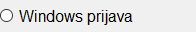
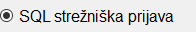

Vpišite ali izberite izmed že izbranih MSSQL strežnik. S klikom na gumb Poiši, bo program Tangenta sam poiskal MSSQL strežnike na lokalnem računalniku in v lokalnem omrežju.
Windows prijava

Izbira Windows prijava pomeni, da se boste neposredno prijavili na MSSQL strežnik z uporabniškim imenom in geslom.
MSSQL strežnik vas v tem primeru ne bo spraševal za uporabniško ime in geslo, saj se zanaša na varnost in dostopne pravice
operacijskega sistema.
SQL strežniška prijava

SQL strežniška prijava pomeni, da ste na strežniku sami določili uporabnike, njihova gesla in njihove pravice.
Za določanje uporabnikov, njihovih gesel in njihove pravic so potrebna računalniško administratorska znanja.